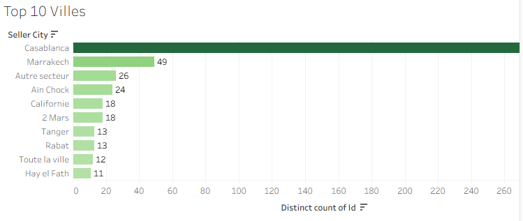
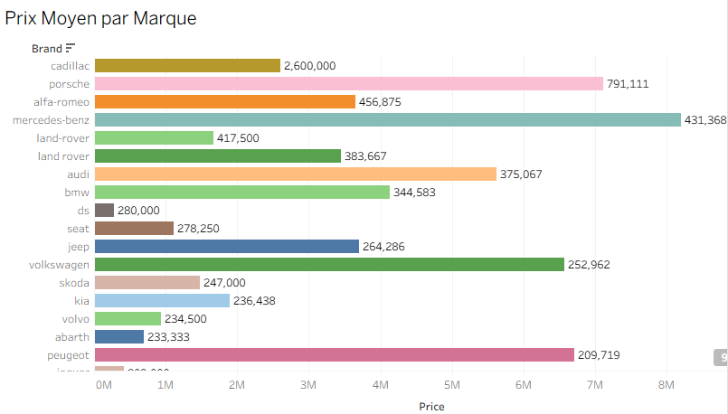
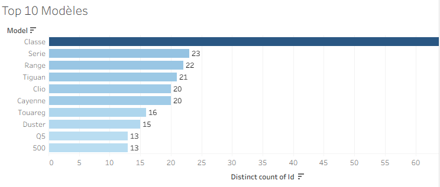
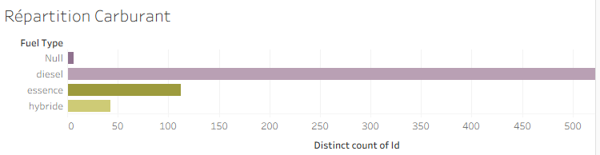

Plateforme Big Data
Analyse et Prédiction du Marché Automobile Marocain
Étudiant : Mouad Babakhouya
Encadrant : ELMOUDEN ABDELAZIZ
CMC Casablanca-Settat (Diplôme 2ème année)
Année universitaire : 2025/2026
Contexte et Problématique
-
Croissance exponentielle du parc d'occasion
Le marché automobile marocain de l'occasion est en plein essor, accentué par les contraintes économiques actuelles et l'inflation des véhicules neufs.
-
Fragmentation extrême de l'information
Les annonces sont éparpillées sur plusieurs plateformes (Avito, Moteur.ma), rendant la collecte et la comparaison manuelles impossibles.
-
Asymétrie d'information flagrante
Les vendeurs professionnels maîtrisent les tendances de prix, tandis que les acheteurs particuliers peinent à évaluer la juste valeur d'un véhicule.
-
Absence de régulation des prix
Les fluctuations irrationnelles et la spéculation nécessitent la création d'un outil d'analyse centralisé, transparent et prédictif.
Objectifs du Projet
Automatisation Robuste
Déployer des crawlers capables d'extraire massivement et quotidiennement les annonces sans blocage technique.
Temps Réel (Streaming)
Analyser les flux de données dès leur publication pour capter les tendances immédiates du marché.
Modélisation Prédictive
Concevoir un algorithme d'IA capable d'estimer avec précision le prix d'un véhicule selon ses attributs (kilométrage, année, etc.).
Aide à la Décision
Offrir des tableaux de bord interactifs (Power BI) pour démocratiser l'information et orienter les décisions d'achat.
Architecture Technique
Moteur.ma
Pipeline de Données
Ingestion
Scripts Selenium simulant le comportement humain pour extraire le texte, les prix et caractéristiques sans blocage.
Orchestration & Streaming
Airflow planifie les tâches quotidiennes. Kafka gère les files d'attente à haut débit pour éviter la perte de données.
Traitement Distribué
Nettoyage intensif via Spark (valeurs nulles, doublons) et transformation des données brutes en format exploitable.
Stockage NoSQL
Insertion dans Cassandra, choisie pour sa haute disponibilité et ses excellentes performances en écriture massive.
Machine Learning et Prédiction
Pour garantir la reproductibilité et la stabilité de nos prédictions, nous avons configuré l'environnement ML avec rigueur.
Variables Clés (Features)
import logging
import os
# Configure logging
logging.basicConfig(level=logging.INFO)
logger = logging.getLogger(__name__)
def main():
# Set environment variables
os.environ["TF_CPP_MIN_LOG_LEVEL"] = "2"
os.environ["JAVA_OPTS"] = "--illegal-access=deny"
# Import dependencies inside main to avoid loading during DAG parsing
from pyspark.sql import SparkSession
import pandas as pd
import numpy as np
from tensorflow.keras.models import Sequential, load_model
from tensorflow.keras.layers import Dense, Dropout, BatchNormalization, LeakyReLU
from tensorflow.keras.callbacks import EarlyStopping, ReduceLROnPlateau, ModelCheckpoint
from tensorflow.keras.optimizers import Adam
from tensorflow.keras.regularizers import l1_l2
from sklearn.metrics import mean_squared_error, mean_absolute_error, r2_score
from sklearn.preprocessing import RobustScaler, LabelEncoder
from sklearn.model_selection import KFold
import tensorflow as tf
import pickle
# Set random seeds for reproducibility
np.random.seed(42)
tf.random.set_seed(42)Résultats et Insights
Cartographie des Prix
Visualisation claire des disparités de prix moyens par ville et région.
Courbe de Décote
Analyse de la dépréciation selon l'âge et le kilométrage accumulé.
Détection d'Anomalies
Mise en évidence immédiate des annonces suspectes (fraudes potentielles).
Tableaux Power BI
Interface intuitive permettant aux acheteurs de filtrer le marché en temps réel.
Tableaux de Bord Interactifs (Power BI)




Bilan & Perspectives
Ce projet a démontré la viabilité d'un système Big Data de bout en bout, capable de transformer des données brutes hétérogènes en prédictions actionnables pour le marché automobile marocain.
Acquis du Projet
-
Pipeline robuste et 100% automatisé (0 intervention manuelle)
-
Modèle prédictif performant adapté au contexte local
-
Transparence du marché via des tableaux de bord interactifs
Évolutions Futures
-
Intégration du Deep Learning pour analyser les photos des véhicules
-
Scraping des réseaux sociaux (Facebook Marketplace, Instagram)
-
Création d'une application Mobile et d'une API de cotation
Merci de votre attention
Place aux Questions & Réponses